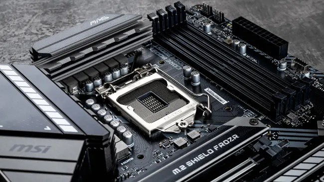
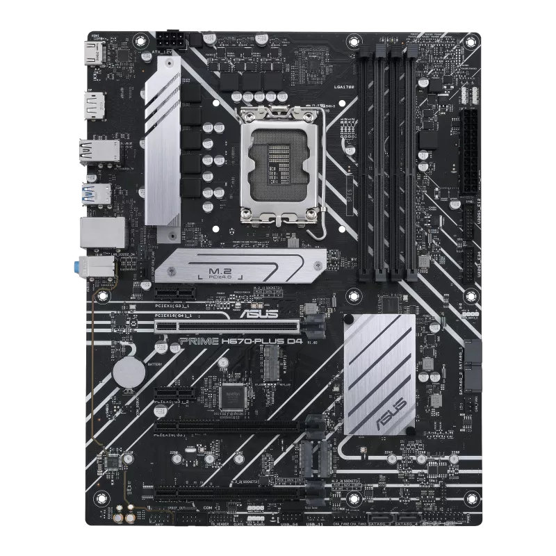

March 2026 • 7 min read
The motherboard is the backbone — the central hub that connects everything together. CPU, RAM, GPU, storage, fans — they all plug into the motherboard. Choose the wrong one and nothing will work together.
Think of the motherboard as the city's road system. Your CPU is the city hall (in charge), your RAM is the offices (where work happens), and your GPU is the factory (heavy lifting). The motherboard is the network of roads connecting all of them so they can communicate and work together.
Without a motherboard, none of your components can talk to each other — and your PC simply won't turn on.

This is Rule #1: Your CPU and motherboard must have the same socket. If they don't match, the CPU physically will not fit.
| CPU Brand & Gen | Socket | Compatible Boards |
|---|---|---|
| AMD Ryzen 1000–5000 | AM4 | A320, B450, B550, X570 |
| AMD Ryzen 7000+ | AM5 | A620, B650, X670 |
| Intel 10th–11th Gen | LGA1200 | B460, H470, Z490, Z590 |
| Intel 12th–14th Gen | LGA1700 | B660, H670, Z690, Z790 |
Within each socket family, there are different chipsets — think of them as different trim levels of the same car model. Same engine, different features.
Motherboards come in different sizes. This must match what your case supports.
| Form Factor | Size | RAM Slots | PCIe Slots | Best For |
|---|---|---|---|---|
| Mini-ITX | 17×17cm | 2 | 1 | Compact / small form factor builds |
| Micro-ATX (mATX) | 24×24cm | 2–4 | 2–3 | Budget/mid builds, compact cases |
| ATX | 30×24cm | 4 | 3–5 | Most popular — full features |
| E-ATX | 30×33cm | 4–8 | 4–7 | Workstations, extreme builds |
Check the maximum RAM speed and capacity your board supports. This is listed as something like "DDR4 up to 4800MHz, max 128GB." Make sure your RAM kit's speed falls within the board's supported range.
M.2 slots are where you plug in your NVMe SSD. Most mid-range boards have 1–2 M.2 slots. If you plan to add multiple NVMe drives later, make sure your board has enough slots.
Check how many USB ports are on the rear panel and whether it has USB-C. Also look at the front panel headers — does it have a USB 3.0 header for your case's front USB ports?
VRMs (Voltage Regulator Modules) control how clean and stable the power delivered to your CPU is. Budget boards have weak VRMs, which cause problems with power-hungry CPUs. If you're pairing with an i9 or Ryzen 9, invest in a board with strong VRMs — typically mid-range or higher B/Z boards.
| Motherboard | Socket | Chipset | Price | Best For |
|---|---|---|---|---|
| MSI B450 Tomahawk | AM4 | B450 | ~₱5,700 | Budget Ryzen 1000–5000 |
| ASUS Prime B550M-A | AM4 | B550 | ~₱6,500 | Mid Ryzen with PCIe 4.0 |
| ASUS Prime B660M-A | LGA1700 | B660 | ~₱8,400 | Budget Intel 12th–13th gen |
| MSI MAG B760 Tomahawk | LGA1700 | B760 | ~₱12,000 | Mid Intel with good VRMs |
| ASUS ROG Strix X570-E | AM4 | X570 | ~₱18,000 | Enthusiast Ryzen 5000 |